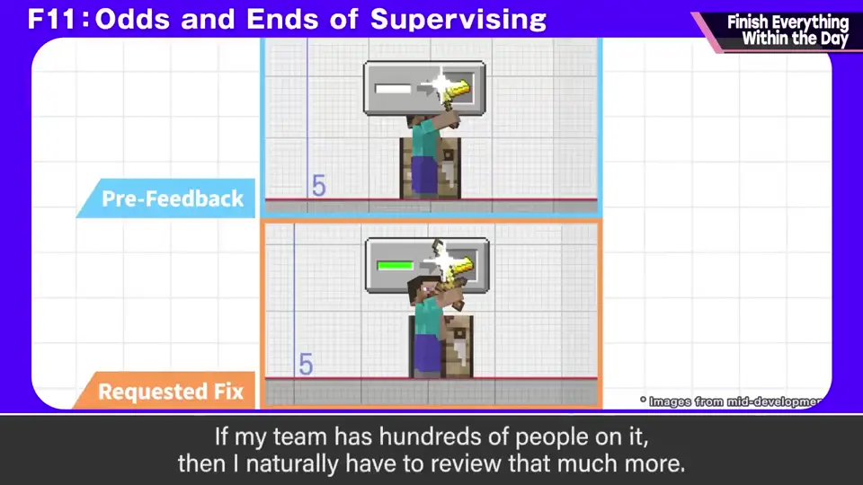
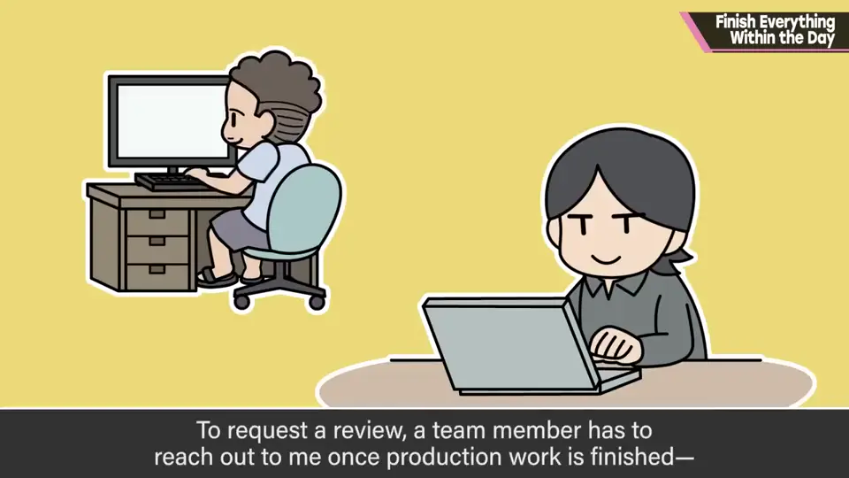
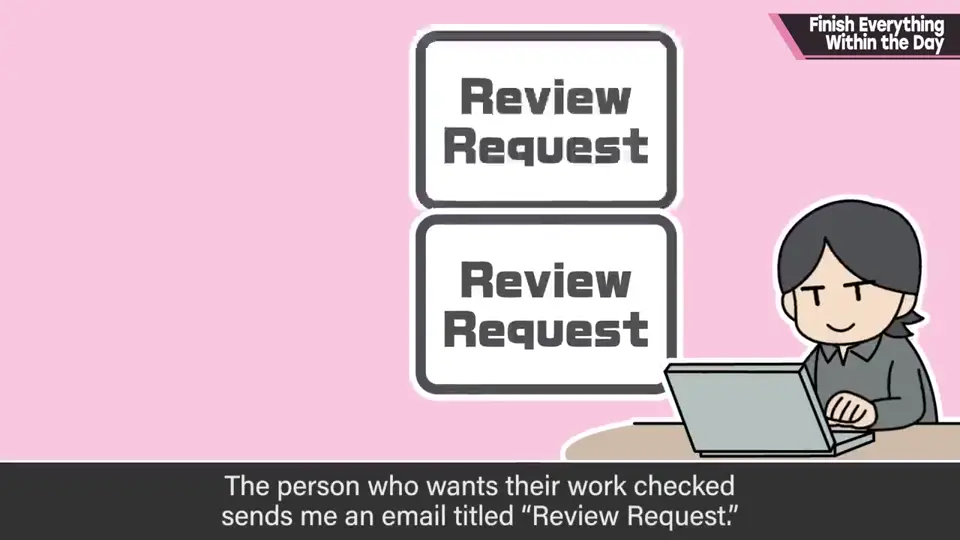
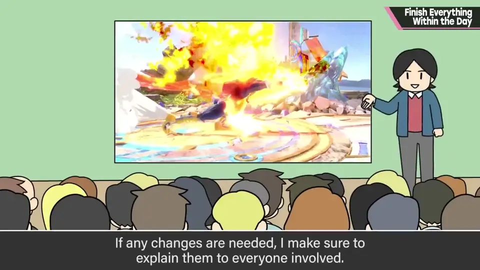
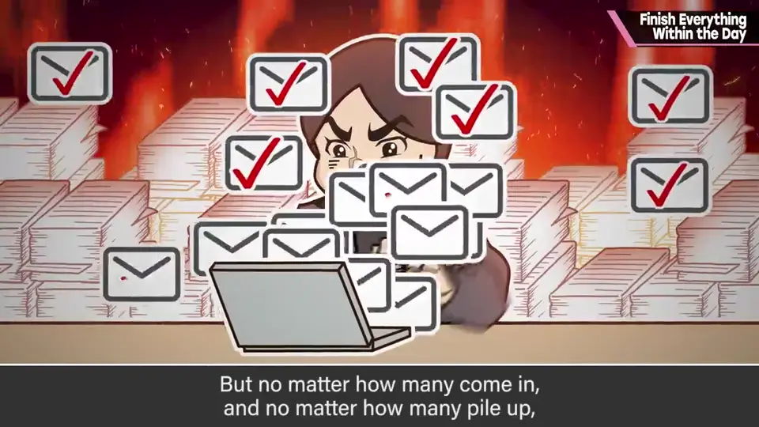
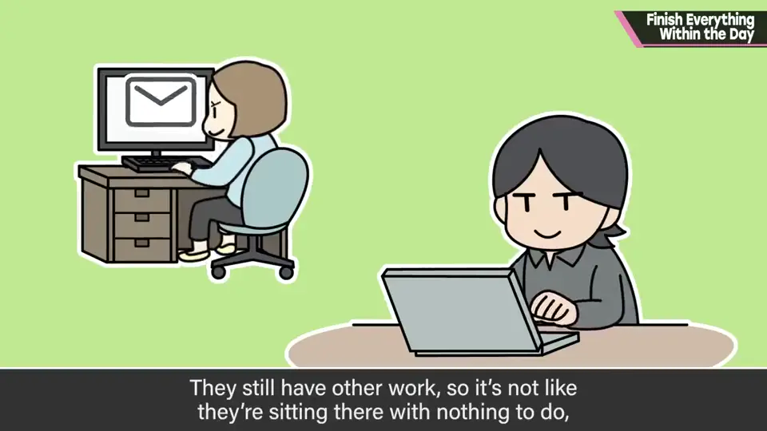
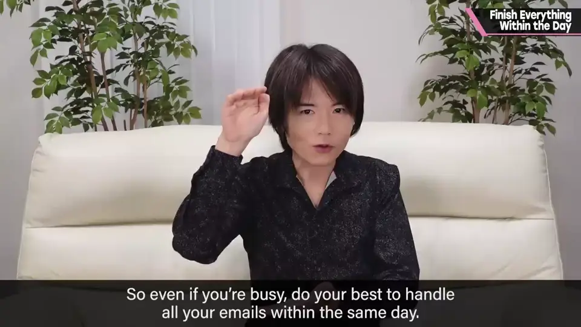
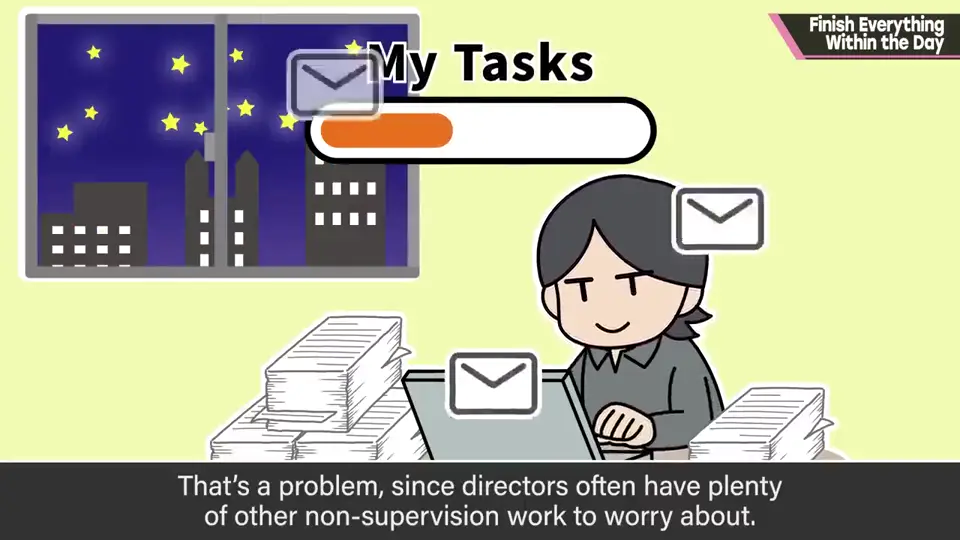

速览
樱井会看团队内的各种工作——细说没完就省略了——因为站在为产品负责的立场，他会看非常多的工作并提出修改；团队几百人规模，看的成果物当然也那么多。他团队里的监修方式：要接受监修，制作完成后需要员工来叫他，委托通过邮件——即时通讯和工单各有缺点，所以不用。提交工作的人在邮件里写「监修依赖」发给他，到达时间就是监修顺序，先到先得；他确认后如有需要先备齐资料再开始监修，用能传达给几乎所有相关者的方式告知应修改之处。监修委托邮件的数量多到难以想象，但无论来多少、堆多高，都以一定在当天回完为原则：基本上邮件来了马上回，正在监修别的就监修完马上回；手头不积压未读邮件很重要。回邮件之前的时间就是让其他员工等待的时间；员工也有别的工作，不至于闲着，但不让人等最好。尤其关键人物的判断延迟会直接变成团队的延迟；早解决也更方便第二、第三轮的往返。而且把回复往后推，第二天会更痛苦，再忙邮件来了也当天处理。邮件到来的时间有忙有闲，时间上是断断续续的；而总监还有与此无关、只有自己能做的工作，这种情况下推荐把一天中例如上午或指定时间以后设为「不监修时间」，确保自己的时间——比一直处于等邮件状态更有效率。
1. 监修的方式 0:03
樱井会看团队内的各种工作。他站在为产品负责的立场，要看非常多的工作并提出修改要求；团队几百人规模的话，要看的成果物当然也那么多。


要接受监修，员工需要在制作完成后来叫他，而委托通过邮件——即时通讯和工单各有缺点，所以不用。
提交工作、希望检查的人在邮件里写「监修依赖」发给他。


2. 再多也当天回完 1:04
监修委托邮件的数量多到难以想象，但无论来多少、堆多高，他都以一定在当天回完为原则推进。

基本上邮件来了就马上回；正在监修别的东西，就在结束后马上回。手头不积压未读邮件很重要。
3. 你的回复时间 = 别人的等待时间 1:37
回复邮件之前的时间，就是让其他员工等待的时间。每位员工也有其他工作，不至于闲着，但不让人等最好。


而且把回复往后推，第二天只会更辛苦。再忙，邮件来了也当天处理。
4. 设定「不监修时间」 2:16
邮件到来的时间有忙有闲，时间上是断断续续的。而总监还有与监修无关、只有自己才能做的工作。

自测题
1. 樱井团队的监修顺序如何决定？
按监修委托邮件到达的时间，先到先得。 0:50
2. 为什么樱井坚持当天回完邮件？
回复前的时间就是别人的等待时间；关键人物的延迟直接变成团队延迟；拖延让第二天更痛苦。 1:37
3. 总监如何确保自己的工作时间？
设定「不监修时间」，如上午或某时刻之后不接受监修。 2:16